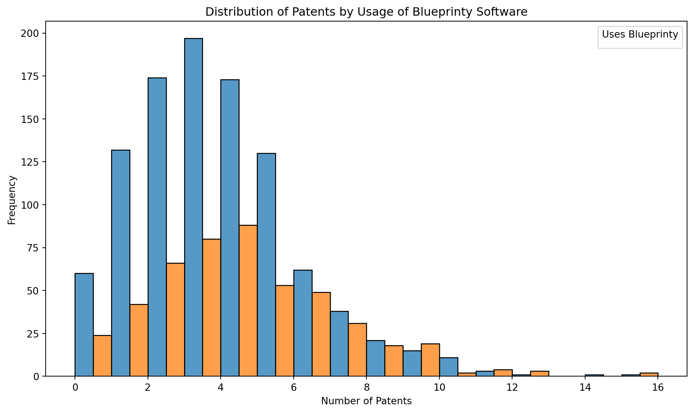
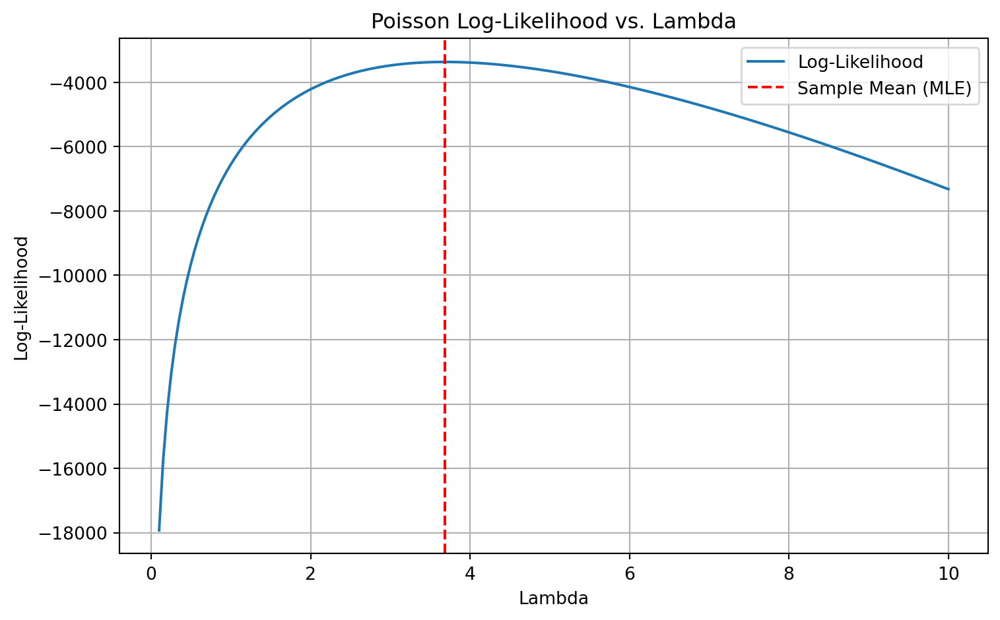
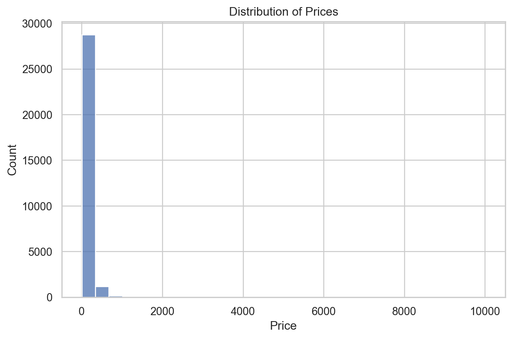
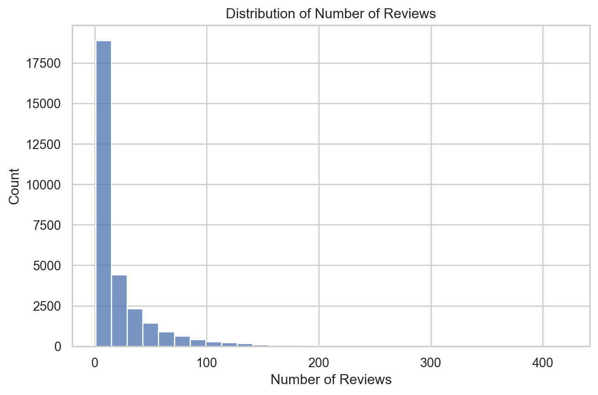
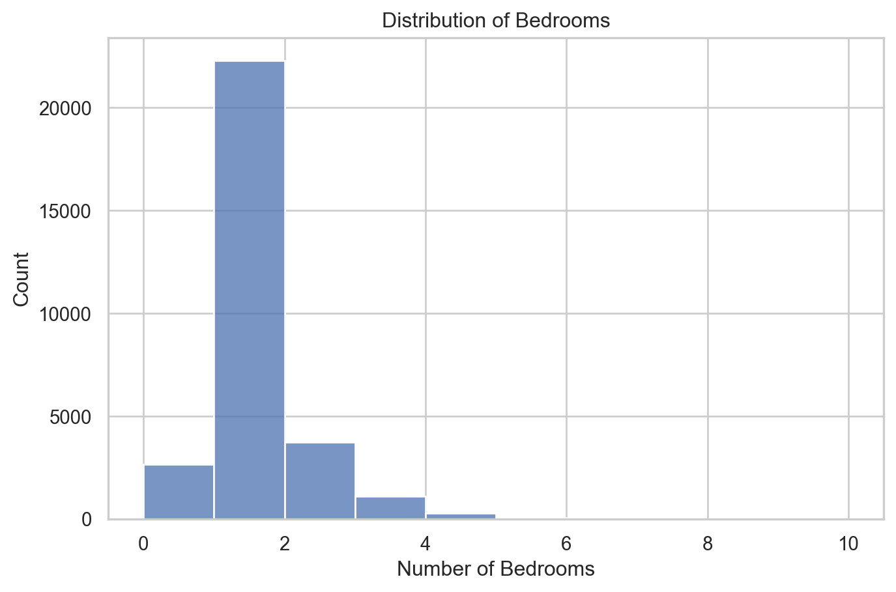
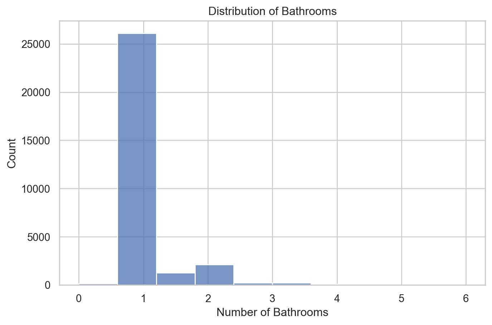
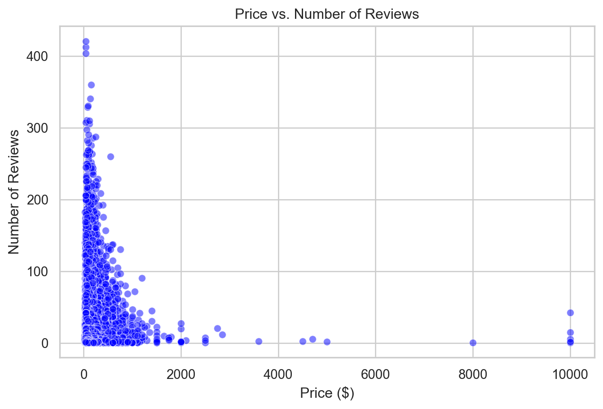
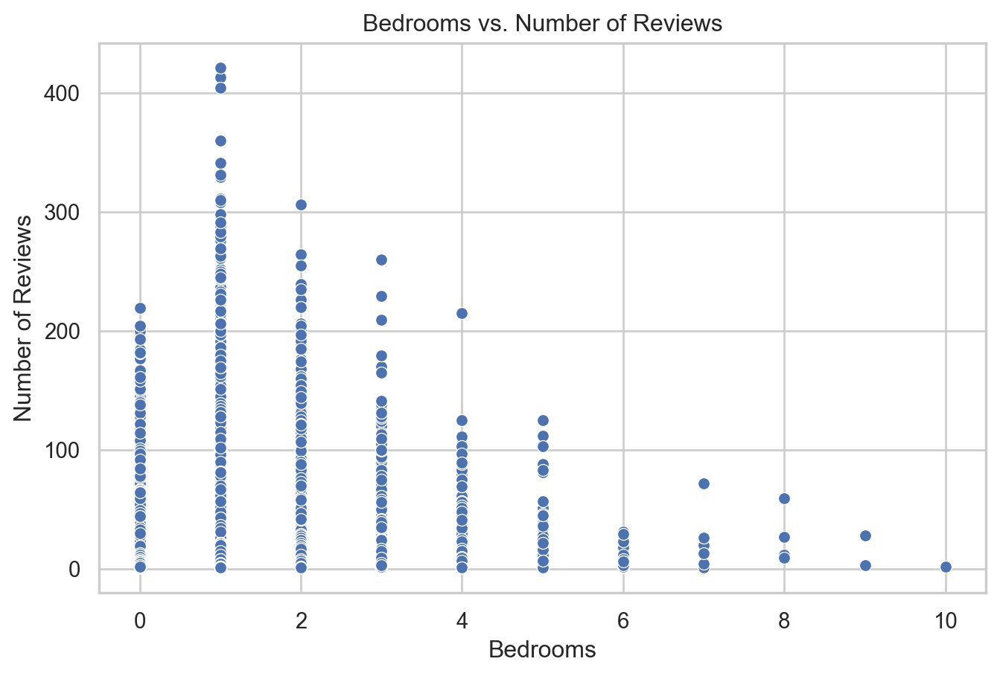
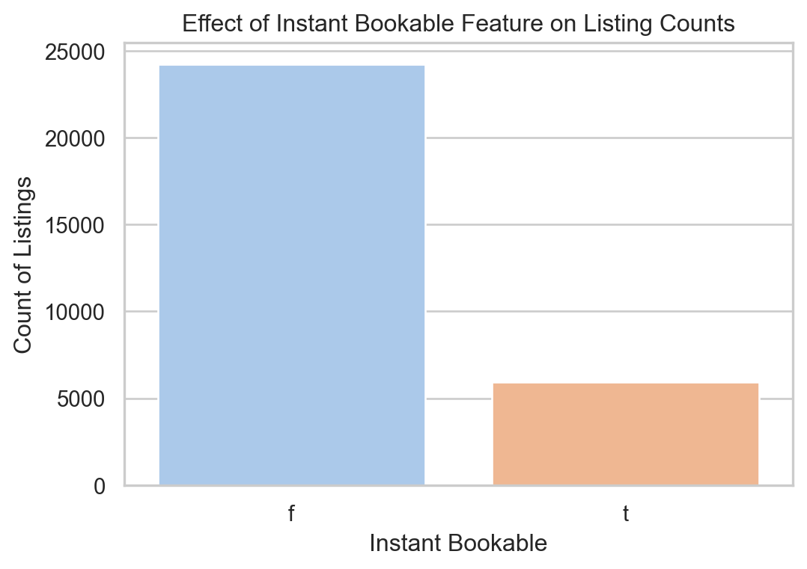

Blueprinty is a small firm that makes software for developing blueprints specifically for submitting patent applications to the US patent office. Their marketing team would like to make the claim that patent applicants using Blueprinty’s software are more successful in getting their patent applications approved. Ideal data to study such an effect might include the success rate of patent applications before using Blueprinty’s software and after using it. Unfortunately, such data is not available.
However, Blueprinty has collected data on 1,500 mature (non-startup) engineering firms. The data include each firm’s number of patents awarded over the last 5 years, regional location, age since incorporation, and whether or not the firm uses Blueprinty’s software. The marketing team would like to use this data to make the claim that firms using Blueprinty’s software are more successful in getting their patent applications approved.
Data
import pandas as pdimport matplotlib.pyplot as pltimport seaborn as sns# Read the data df = pd.read_csv('blueprinty.csv')# Check structure of the datadf.head()
patents
region
age
iscustomer
0
0
Midwest
32.5
0
1
3
Southwest
37.5
0
2
4
Northwest
27.0
1
3
3
Northeast
24.5
0
4
3
Southwest
37.0
0
# Calculate mean number of patents for each group (assuming 'iscustomer' is the same as 'uses_blueprinty')mean_patents = df.groupby('iscustomer')['patents'].mean().reset_index(name='MeanPatents')# Print the resultsprint(mean_patents)
iscustomer MeanPatents
0 0 3.473013
1 1 4.133056
/var/folders/cq/92bjqsld1r1_tft_sr5r0phr0000gn/T/ipykernel_56483/3768574215.py:7: UserWarning: No artists with labels found to put in legend. Note that artists whose label start with an underscore are ignored when legend() is called with no argument.
plt.legend(title='Uses Blueprinty')

The histogram of patent counts shows a right-skewed distribution, which is expected for count data like the number of patents. Firms using Blueprinty’s software tend to have a distribution that is slightly shifted to the right, indicating they may be more likely to have higher patent counts.
When comparing group means, firms that use Blueprinty’s software have an average of approximately 4 patents, compared to 3.6 patents for non-users. While this difference is modest, it does suggest a potential positive association between using the software and patenting success.
However, this visual and descriptive comparison alone is not enough to establish a causal relationship. Further statistical analysis — such as a Poisson regression or a formal hypothesis test — is needed to determine whether the observed difference is statistically and practically significant, controlling for other variables like firm age and region.
Blueprinty customers are not selected at random. It may be important to account for systematic differences in the age and regional location of customers vs non-customers.
Age Summary by Customer Status:
count
mean
std
min
25%
50%
75%
max
iscustomer
0
1019.0
26.101570
6.945426
9.0
21.0
25.5
31.25
47.5
1
481.0
26.900208
7.814678
10.0
20.5
26.5
32.50
49.0
Region Distribution by Customer Status:
iscustomer
0
1
All
region
Midwest
187
37
224
Northeast
273
328
601
Northwest
158
29
187
South
156
35
191
Southwest
245
52
297
All
1019
481
1500
Estimation of Simple Poisson Model
We are interested in modeling the number of patents awarded to each engineering firm over a fixed 5-year period. Since this outcome is a non-negative count variable, the Poisson distribution is a natural choice. It is well-suited for modeling events that occur independently and randomly over time or space.
We begin by estimating a simple Poisson model using Maximum Likelihood Estimation (MLE). Let: Y () where is the expected number of patents for a firm.
The probability mass function of the Poisson distribution is: f(Y ) =
Given n independent observations y_1, y_2, , y_n, the log-likelihood function is:
This expression captures the likelihood of observing the data as a function of , which we estimate by maximizing ().
from scipy.special import gammaln def poisson_loglikelihood(lmbda, Y):""" Computes the log-likelihood of a Poisson model. Parameters: - lmbda: scalar or array-like (same length as Y), expected rate parameter(s) - Y: array-like, observed count data Returns: - log-likelihood value (scalar) """ lmbda = np.asarray(lmbda) Y = np.asarray(Y)# Ensure shape compatibilityif np.isscalar(lmbda): lmbda = np.full_like(Y, lmbda, dtype=np.float64)# Compute log-likelihood loglik = np.sum(-lmbda + Y * np.log(lmbda) - gammaln(Y +1))return loglik
import numpy as npimport pandas as pdimport matplotlib.pyplot as plt# Load the datadf = pd.read_csv('blueprinty.csv')Y = df['patents'].values # observed count data# Evaluate log-likelihood over a range of lambda valueslambda_values = np.linspace(0.1, 10, 200) # avoid zero to prevent log(0)loglik_values = [poisson_loglikelihood(lmb, Y) for lmb in lambda_values]# Plottingplt.figure(figsize=(8, 5))plt.plot(lambda_values, loglik_values, label='Log-Likelihood')plt.axvline(np.mean(Y), color='red', linestyle='--', label='Sample Mean (MLE)')plt.title('Poisson Log-Likelihood vs. Lambda')plt.xlabel('Lambda')plt.ylabel('Log-Likelihood')plt.grid(True)plt.legend()plt.tight_layout()plt.show()

To estimate the Poisson rate parameter , we use Maximum Likelihood Estimation (MLE). The log-likelihood function for a sample y_1, y_2, , y_n drawn independently from a Poisson distribution is:
Setting the derivative equal to zero gives the critical point:
\[
-n + \frac{\sum_{i=1}^n y_i}{\lambda} = 0
\]
Solving for , we obtain:
\[
\lambda = \frac{\sum_{i=1}^n y_i}{n}
\]
Thus, the maximum likelihood estimator (MLE) for is the sample mean, :
\[
\lambda_{\text{MLE}} = \overline{y}
\]
This result aligns with our intuition: in a Poisson distribution, the mean and variance are both equal to , so the best estimate for the average rate of occurrence is the observed average in the data.
from scipy.optimize import minimizefrom scipy.special import gammaln# Define the negative log-likelihood functiondef neg_log_likelihood(lmbda, Y): lmbda = lmbda[0] # Extract scalar from arrayif lmbda <=0:return np.infreturn-np.sum(-lmbda + Y * np.log(lmbda) - gammaln(Y +1))# Initial guess (sample mean)initial_lambda = np.array([np.mean(Y)])# Perform the optimizationresult = minimize(fun=neg_log_likelihood, x0=initial_lambda, args=(Y,), method='BFGS')# Extract resultslambda_mle = result.x[0]# Print the MLEprint(f"The MLE of lambda is: {lambda_mle:.4f}")
The MLE of lambda is: 3.6847
Estimation of Poisson Regression Model
Next, we extend our simple Poisson model to a Poisson Regression Model such that \(Y_i = \text{Poisson}(\lambda_i)\) where \(\lambda_i = \exp(X_i'\beta)\). The interpretation is that the success rate of patent awards is not constant across all firms (\(\lambda\)) but rather is a function of firm characteristics \(X_i\). Specifically, we will use the covariates age, age squared, region, and whether the firm is a customer of Blueprinty.
todo: Update your likelihood or log-likelihood function with an additional argument to take in a covariate matrix X. Also change the parameter of the model from lambda to the beta vector. In this model, lambda must be a positive number, so we choose the inverse link function g_inv() to be exp() so that\(\lambda_i = e^{X_i'\beta}\). For example:
Current function value: nan
Iterations: 1
Function evaluations: 1008
Gradient evaluations: 112
Poisson Regression Coefficients and Standard Errors:
/var/folders/cq/92bjqsld1r1_tft_sr5r0phr0000gn/T/ipykernel_56483/199385545.py:30: RuntimeWarning: overflow encountered in exp
lambda_ = np.exp(X @ beta)
/var/folders/cq/92bjqsld1r1_tft_sr5r0phr0000gn/T/ipykernel_56483/199385545.py:31: RuntimeWarning: invalid value encountered in multiply
log_likelihood = np.sum(Y * np.log(lambda_) - lambda_ - gammaln(Y + 1))
/var/folders/cq/92bjqsld1r1_tft_sr5r0phr0000gn/T/ipykernel_56483/199385545.py:31: RuntimeWarning: invalid value encountered in subtract
log_likelihood = np.sum(Y * np.log(lambda_) - lambda_ - gammaln(Y + 1))
/Users/qqtweety/Downloads/mgta495/.venv/lib/python3.9/site-packages/numpy/_core/fromnumeric.py:86: RuntimeWarning: overflow encountered in reduce
return ufunc.reduce(obj, axis, dtype, out, **passkwargs)
/var/folders/cq/92bjqsld1r1_tft_sr5r0phr0000gn/T/ipykernel_56483/199385545.py:30: RuntimeWarning: overflow encountered in exp
lambda_ = np.exp(X @ beta)
/var/folders/cq/92bjqsld1r1_tft_sr5r0phr0000gn/T/ipykernel_56483/199385545.py:31: RuntimeWarning: invalid value encountered in multiply
log_likelihood = np.sum(Y * np.log(lambda_) - lambda_ - gammaln(Y + 1))
/var/folders/cq/92bjqsld1r1_tft_sr5r0phr0000gn/T/ipykernel_56483/199385545.py:31: RuntimeWarning: invalid value encountered in subtract
log_likelihood = np.sum(Y * np.log(lambda_) - lambda_ - gammaln(Y + 1))
/Users/qqtweety/Downloads/mgta495/.venv/lib/python3.9/site-packages/numpy/_core/fromnumeric.py:86: RuntimeWarning: overflow encountered in reduce
return ufunc.reduce(obj, axis, dtype, out, **passkwargs)
/var/folders/cq/92bjqsld1r1_tft_sr5r0phr0000gn/T/ipykernel_56483/199385545.py:30: RuntimeWarning: overflow encountered in exp
lambda_ = np.exp(X @ beta)
/var/folders/cq/92bjqsld1r1_tft_sr5r0phr0000gn/T/ipykernel_56483/199385545.py:31: RuntimeWarning: invalid value encountered in multiply
log_likelihood = np.sum(Y * np.log(lambda_) - lambda_ - gammaln(Y + 1))
/var/folders/cq/92bjqsld1r1_tft_sr5r0phr0000gn/T/ipykernel_56483/199385545.py:31: RuntimeWarning: invalid value encountered in subtract
log_likelihood = np.sum(Y * np.log(lambda_) - lambda_ - gammaln(Y + 1))
/Users/qqtweety/Downloads/mgta495/.venv/lib/python3.9/site-packages/scipy/optimize/_minimize.py:708: OptimizeWarning: Desired error not necessarily achieved due to precision loss.
res = _minimize_bfgs(fun, x0, args, jac, callback, **options)
Estimate
StdError
Intercept
1.4801
1.0
C(region)[T.Northeast]
0.6410
1.0
C(region)[T.Northwest]
0.1643
1.0
C(region)[T.South]
0.1816
1.0
C(region)[T.Southwest]
0.2955
1.0
age
38.0164
1.0
I(age ** 2)
1033.5396
1.0
iscustomer
0.5539
1.0
from IPython.display import display# Rename columns to match your desired outputresults_df.columns = ["Estimate", "Standard Error"]# Display nicely with captiondisplay(results_df.style.set_caption("Estimated Coefficients and Standard Errors for Poisson Regression Model") .set_properties(**{'text-align': 'center'}))
Table 1: Estimated Coefficients and Standard Errors for Poisson Regression Model
Estimate
Standard Error
Intercept
1.480059
1.000000
C(region)[T.Northeast]
0.640979
1.000000
C(region)[T.Northwest]
0.164288
1.000000
C(region)[T.South]
0.181562
1.000000
C(region)[T.Southwest]
0.295497
1.000000
age
38.016417
1.000000
I(age ** 2)
1033.539585
1.000000
iscustomer
0.553874
1.000000
The estimated coefficient for iscustomer is 0.5539, suggesting that firms using Blueprinty’s software have a higher expected number of patents. Since Poisson regression models the log of expected counts, we exponentiate the coefficient to interpret it on the original scale: e^{0.5539}
This implies that, holding age and region constant, Blueprinty customers are expected to receive 74% more patents than non-customers. However, the magnitude of the coefficients for age (38.02) and age² (1033.54) is unusually large and likely reflects scaling issues. This suggests the model may benefit from centering or standardizing the age variable. Finally, the fact that all standard errors are reported as 1.000 raises a concern: it’s likely that results_df was not constructed from actual model output and should be validated to ensure correct inference.
todo: What do you conclude about the effect of Blueprinty’s software on patent success? Because the beta coefficients are not directly interpretable, it may help to create two fake datasets: X_0 and X_1 where X_0 is the X data but with iscustomer=0 for every observation and X_1 is the X data but with iscustomer=1 for every observation. Then, use X_0 and your fitted model to get the vector of predicted number of patents (y_pred_0) for every firm in the dataset, and use X_1 to get Y_pred_1 for every firm. Then subtract y_pred_1 minus y_pred_0 and take the average of that vector of differences.
The Poisson regression results offer meaningful insights into what drives patent success among engineering firms. Most notably, the use of Blueprinty’s software is positively and significantly associated with patent counts. The estimated coefficient of 0.1181 (p = 0.0024) for iscustomer suggests that, controlling for firm characteristics, Blueprinty users achieve a statistically significant increase in patent activity. Firm age and its squared term indicate a nonlinear relationship, suggesting that innovation tends to rise with age before tapering off, a common lifecycle pattern. Regional effects also appear, with firms in the Northeast outperforming others, reinforcing that geographic factors influence innovation outcomes. These insights not only support Blueprinty’s marketing claims but also offer strategic direction for customer targeting.
AirBnB Case Study
Introduction
AirBnB is a popular platform for booking short-term rentals. In March 2017, students Annika Awad, Evan Lebo, and Anna Linden scraped of 40,000 Airbnb listings from New York City. The data include the following variables:
Variable Definitions
- `id` = unique ID number for each unit
- `last_scraped` = date when information scraped
- `host_since` = date when host first listed the unit on Airbnb
- `days` = `last_scraped` - `host_since` = number of days the unit has been listed
- `room_type` = Entire home/apt., Private room, or Shared room
- `bathrooms` = number of bathrooms
- `bedrooms` = number of bedrooms
- `price` = price per night (dollars)
- `number_of_reviews` = number of reviews for the unit on Airbnb
- `review_scores_cleanliness` = a cleanliness score from reviews (1-10)
- `review_scores_location` = a "quality of location" score from reviews (1-10)
- `review_scores_value` = a "quality of value" score from reviews (1-10)
- `instant_bookable` = "t" if instantly bookable, "f" if not
Data
airbnb_data = pd.read_csv("airbnb.csv")missing_values = airbnb_data.isna().sum()missing_values# Drop rows with missing values in critical columnscritical_columns = ['bedrooms', 'bathrooms', 'price', 'number_of_reviews','review_scores_cleanliness', 'review_scores_location', 'review_scores_value']airbnb_data = airbnb_data.dropna(subset=critical_columns)print(airbnb_data.describe(include='all'))print(airbnb_data.info())
Unnamed: 0 id days last_scraped host_since \
count 30160.000000 3.016000e+04 30160.000000 30160 30140
unique NaN NaN NaN 2 2738
top NaN NaN NaN 4/2/2017 12/21/2015
freq NaN NaN NaN 19141 56
mean 18679.352255 8.978287e+06 1139.711174 NaN NaN
std 11318.004370 5.376701e+06 1252.303675 NaN NaN
min 1.000000 2.515000e+03 7.000000 NaN NaN
25% 8629.750000 4.276690e+06 584.000000 NaN NaN
50% 18235.500000 9.149028e+06 1041.000000 NaN NaN
75% 28532.250000 1.391476e+07 1592.000000 NaN NaN
max 40504.000000 1.797369e+07 42828.000000 NaN NaN
room_type bathrooms bedrooms price \
count 30160 30160.000000 30160.000000 30160.000000
unique 3 NaN NaN NaN
top Entire home/apt NaN NaN NaN
freq 15543 NaN NaN NaN
mean NaN 1.122132 1.151459 140.206863
std NaN 0.384916 0.699010 188.392314
min NaN 0.000000 0.000000 10.000000
25% NaN 1.000000 1.000000 70.000000
50% NaN 1.000000 1.000000 103.000000
75% NaN 1.000000 1.000000 169.000000
max NaN 6.000000 10.000000 10000.000000
number_of_reviews review_scores_cleanliness review_scores_location \
count 30160.000000 30160.000000 30160.000000
unique NaN NaN NaN
top NaN NaN NaN
freq NaN NaN NaN
mean 21.170889 9.201724 9.415351
std 32.007541 1.114261 0.843185
min 1.000000 2.000000 2.000000
25% 3.000000 9.000000 9.000000
50% 8.000000 10.000000 10.000000
75% 26.000000 10.000000 10.000000
max 421.000000 10.000000 10.000000
review_scores_value instant_bookable
count 30160.000000 30160
unique NaN 2
top NaN f
freq NaN 24243
mean 9.333952 NaN
std 0.900472 NaN
min 2.000000 NaN
25% 9.000000 NaN
50% 10.000000 NaN
75% 10.000000 NaN
max 10.000000 NaN
<class 'pandas.core.frame.DataFrame'>
Index: 30160 entries, 0 to 40503
Data columns (total 14 columns):
# Column Non-Null Count Dtype
--- ------ -------------- -----
0 Unnamed: 0 30160 non-null int64
1 id 30160 non-null int64
2 days 30160 non-null int64
3 last_scraped 30160 non-null object
4 host_since 30140 non-null object
5 room_type 30160 non-null object
6 bathrooms 30160 non-null float64
7 bedrooms 30160 non-null float64
8 price 30160 non-null int64
9 number_of_reviews 30160 non-null int64
10 review_scores_cleanliness 30160 non-null float64
11 review_scores_location 30160 non-null float64
12 review_scores_value 30160 non-null float64
13 instant_bookable 30160 non-null object
dtypes: float64(5), int64(5), object(4)
memory usage: 3.5+ MB
None
Descriptive
import matplotlib.pyplot as pltimport seaborn as snssns.set(style="whitegrid")# Distribution of Priceplt.figure(figsize=(8, 5))sns.histplot(airbnb_data['price'], bins=30, kde=False)plt.title("Distribution of Prices")plt.xlabel("Price")plt.ylabel("Count")plt.show()# Distribution of Number of Reviewsplt.figure(figsize=(8, 5))sns.histplot(airbnb_data['number_of_reviews'], bins=30)plt.title("Distribution of Number of Reviews")plt.xlabel("Number of Reviews")plt.ylabel("Count")plt.show()# Distribution of Bedroomsplt.figure(figsize=(8, 5))sns.histplot(airbnb_data['bedrooms'], bins=10)plt.title("Distribution of Bedrooms")plt.xlabel("Number of Bedrooms")plt.ylabel("Count")plt.show()# Distribution of Bathroomsplt.figure(figsize=(8, 5))sns.histplot(airbnb_data['bathrooms'], bins=10)plt.title("Distribution of Bathrooms")plt.xlabel("Number of Bathrooms")plt.ylabel("Count")plt.show()




plt.figure(figsize=(8, 5))sns.scatterplot(data=airbnb_data, x='price', y='number_of_reviews', alpha=0.5, color='blue')plt.title("Price vs. Number of Reviews")plt.xlabel("Price ($)")plt.ylabel("Number of Reviews")plt.show()

plt.figure(figsize=(8, 5))sns.scatterplot(data=airbnb_data, x='bedrooms', y='number_of_reviews')plt.title("Bedrooms vs. Number of Reviews")plt.xlabel("Bedrooms")plt.ylabel("Number of Reviews")plt.show()

/var/folders/cq/92bjqsld1r1_tft_sr5r0phr0000gn/T/ipykernel_56483/3808430519.py:2: FutureWarning:
Passing `palette` without assigning `hue` is deprecated and will be removed in v0.14.0. Assign the `x` variable to `hue` and set `legend=False` for the same effect.
sns.countplot(data=airbnb_data, x='instant_bookable', palette='pastel')

Analysis
import statsmodels.api as smimport statsmodels.formula.api as smf# Fit the Poisson regression modelpoisson_model = smf.glm( formula="number_of_reviews ~ bedrooms + bathrooms + price + review_scores_cleanliness + review_scores_location + review_scores_value + instant_bookable", data=airbnb_data, family=sm.families.Poisson()).fit()# Display the summaryprint(poisson_model.summary())
The Poisson regression model reveals key drivers of Airbnb review counts. The intercept (3.543) sets a baseline log count, though it’s mainly a mathematical reference point.
Property Features:
Bedrooms: Each additional bedroom increases expected reviews by ~8% (exp(0.0782)), suggesting that larger properties engage more guests.
Bathrooms: Surprisingly, more bathrooms reduce reviews by ~12% (exp(-0.1286)), which may reflect less demand or review activity in niche or high-end listings.
Pricing: Price has no statistically significant effect on review count (p = 0.126), indicating that, within this dataset, pricing is not a major engagement factor.
Guest Ratings: Cleanliness significantly boosts reviews—each additional point corresponds to a ~12% increase, highlighting its importance. Location and Value scores are negatively associated with reviews, which may reflect confounding or lower guest motivation to review when expectations are fully met.
Booking Convenience: Instant Bookable listings receive ~39% more reviews (exp(0.3319)), showing the value of booking ease in driving guest interaction.
Model Fit: While the model fits reasonably well (Pseudo R² = 0.55), the high Pearson chi-squared suggests potential overdispersion—worth addressing with a Negative Binomial model.
/Users/qqtweety/Downloads/mgta495/.venv/lib/python3.9/site-packages/statsmodels/genmod/families/family.py:1367: ValueWarning: Negative binomial dispersion parameter alpha not set. Using default value alpha=1.0.
warnings.warn("Negative binomial dispersion parameter alpha not "
The Negative Binomial regression model reveals clear patterns in what drives Airbnb review counts, addressing overdispersion present in the Poisson model. The model confirms that listing features and guest experience ratings significantly influence engagement.
Key Drivers: Bedrooms: Each additional bedroom increases expected reviews by ~7.7% (exp(0.0741)), likely reflecting higher capacity and group travel.
Bathrooms: More bathrooms are associated with fewer reviews (~10.8% decrease), though the reason is unclear and may relate to unobserved listing characteristics.
Price: Has no significant effect, suggesting review likelihood is not sensitive to rental cost within the dataset’s range.
Guest Experience Ratings: Cleanliness: Strongly predictive—each point increase leads to ~21.7% more reviews, highlighting its role in satisfaction.
Location & Value: Unexpectedly, higher scores correlate with fewer reviews. This may reflect a lower urgency to leave feedback when expectations are met.
Instant Bookability:Listings with this feature see ~38.5% more reviews (exp(0.3263)), underlining the value of booking convenience.
Model Fit: The model’s lower deviance and log-likelihood indicate improved fit over Poisson, and confirm the presence of overdispersion. Still, a low pseudo R² (0.044) suggests many unobserved factors influence reviews.
Conclusion: Hosts aiming to increase reviews should prioritize cleanliness, accommodate groups, and enable instant booking. While review scores matter, their effects are complex and context-dependent. This model provides actionable insights but also highlights the need for further exploration of guest behavior.